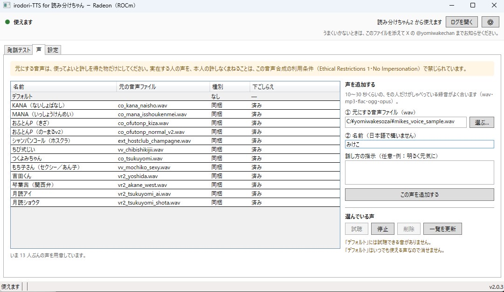

はじめて開いたときに、動かすための一式（約 5.3 GB）をインターネットからダウンロードします。10 分ほどかかります。
ほかの方が作ったプログラムや音声モデルを、勝手に配って回らない方針だからです。そのぶんを、はじめて開いたときにあなたのパソコンへダウンロードします。
ネットにつないだままお待ちください。一度すませば、次からはすぐ使えます。
お使いのパソコンに合う方を選んでください
最新版
どちらか分からないときは
キーボードの Windows キーを押しながら X を押し →「デバイス マネージャー」→「ディスプレイ アダプター」を開いてください。
NVIDIA や GeForce と書いてあれば RTX（CUDA）、Radeon と書いてあれば Radeon（ROCm） です。
それでも分からないときは RTX（CUDA） をお試しください。合わないときはアプリが教えます。
使い方（3 ステップ）
-
ダウンロードして、インストールする
落ちてきたファイルをダブルクリックして、「次へ」「インストール」「完了」を押すだけです。管理者のパスワードは要りません。
-
アプリが開いたら、そのまま待つ
はじめの 1 回だけ、動かすための一式をダウンロードします（約 5.3 GB・10 分ほど）。途中で 1 度、Windows の許可の窓が出るので「はい」を押してください。「使えます。」と出たら終わりです。
-
しゃべらせてみる
声を選び、文を打って、〔しゃべらせる〕を押します。1〜2 秒で鳴ります。
読み分けちゃん2 で使うときは、このアプリを開いたままにしてください。
声を増やす（自分の音声ファイルを使う）
同梱の 12 人の声のほかに、手元の音声ファイルから声を作れます。「声」のタブで、右側の「声を追加する」の欄を使います。
- 元にする音声ファイルを選ぶ
①の〔選ぶ…〕で音声ファイルを選びます（wav・mp3・flac・ogg・opus）。10〜30 秒くらいの、その人だけがしゃべっている録音がよく合います。
- 名前を付ける
②に、その声の名前を日本語で入れます。この名前が、発話テストや読み分けちゃん2 で選ぶときの名前になります。話し方の指示（明るく元気に、など）は任意です。
- 〔この声を追加する〕を押す
一覧に声が増え、「下ごしらえ」が「済み」になれば使えます。追加した声は、読み分けちゃん2 からも同じ名前で選べます。

- 選んだ音声ファイルは、アプリが写しを取り込んで使います。元のファイルは動かしませんし、消しても声は残ります。
- いらなくなった声は、一覧で選んで〔削除〕で消せます。同梱の声も消せます（「デフォルト」だけは消せません）。
- 元にする音声は、使ってよいと許しを得た物だけにしてください。実在する人の声を、本人の許しなくまねることは、この音声合成の利用条件（Ethical Restrictions）で禁じられています。
必要なもの
- Windows 11 / 10（64 ビット） のパソコン
- NVIDIA のグラフィックス（GeForce / RTX など）、または AMD の Radeon
（Radeon で確かめられているのは Ryzen AI MAX+ 395 ／ Radeon 8060S です）
- グラフィックスドライバが新しいこと。NVIDIA なら 580.00 以上だと CUDA 13.0 で、
528.33 以上なら CUDA 12.6 で動きます。古いままだと、アプリが理由と直し方を出します。
- 空き容量 12 GB ほど（準備のあいだだけ必要です。終わったあと、このアプリが使うのは 約 8 GB です）
- インターネット接続（はじめの準備のときだけ必要です）
- Windows の スマート アプリ コントロール が有効なパソコンでは、このアプリが使う部品が読み込めないことがあり、動かないことがあります
（設定は Windows セキュリティ → アプリとブラウザー コントロール → スマート アプリ コントロール にあります）
グラフィックスが無いパソコンでも動きますが、とても遅いので配信には使えません。
よくある質問
はじめの 1 回だけ時間がかかるのはなぜ？
このアプリには、ほかの方が作ったプログラムと音声モデルが入っていません。勝手に配って回らない方針だからです。
そのぶんを、はじめて開いたときにあなたのパソコンへダウンロードします（約 5.3 GB・10 分ほど）。
2 回目からはすぐ使えます。
RTX（CUDA）と Radeon（ROCm）は何が違うの？
GPU の計算のしくみが違うだけで、できることも、入っている声も同じです。
NVIDIA のグラフィックスは CUDA、AMD の Radeon は ROCm を使うので、入れる物が別になっています。
まちがえて入れても、はじめの準備の画面でアプリが教えます（「このパソコンのグラフィックスは、この版では使えません。」と出ます）。そのときは、ダウンロードを始める前に閉じて、このページからもう一方をダウンロードして入れてください。まちがえた方は Windows の「設定 → アプリ」から消せます。
2 つは別のアプリです。同じパソコンに両方入れられますが、設定も、追加した声も、ダウンロードした物もそれぞれ別に持ち、同時には開けません（あとから開いた方が、つなぎ口が塞がっていると出ます）。
「WindowsによってPCが保護されました」と出ました
「詳細情報」を押してから「実行」を押してください。個人が作った無料のソフトで、
Windows がまだ見慣れていないために出る画面です。
読み分けちゃん2 ではどう使うの？
このアプリを開いたままにして、読み分けちゃん2 の設定でこのエンジンを有効にするだけです。
あとは読み分けちゃん2 の側が自動で見つけます。声は、このアプリに出ている名前がそのまま出ます。
アプリを閉じると読み上げも止まりますので、配信の間は開いたままにしてください。
※ このエンジンに対応した版の読み分けちゃん2 が要ります。
消したいときは？
Windows の「設定 → アプリ」から、ふつうのアプリと同じように消せます。
このアプリが置いていた物（ダウンロードした一式・取り込んだ声・設定・記録）はすべて一緒に消えます。何も聞かれません。
声を追加するときに選んだ、あなたの音声ファイルには触れません。そのまま残ります。
両方の版を入れている場合、消えるのは消した方だけです。もう片方はそのまま使えます。